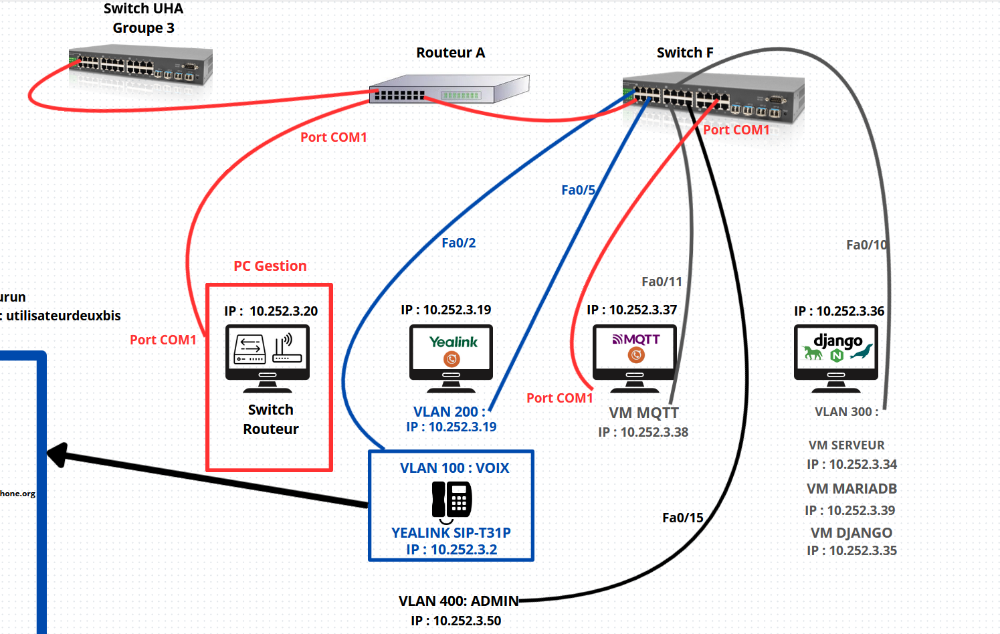
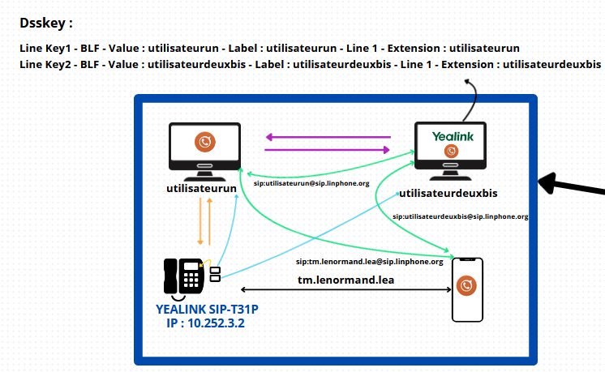
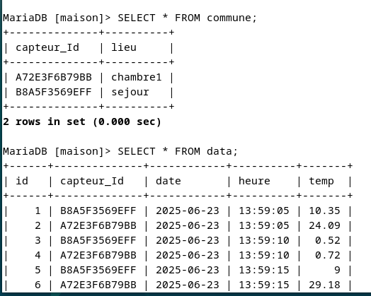
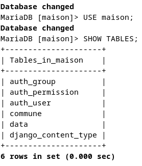

In this SAÉ, I worked independently on building and securing a complete local network. I set up several VLANs (administration, developers, administrators and voice), configured inter-VLAN routing directly on the main switch, and segmented the IP addressing so that each user has their own subnet, with masks adapted to each use case distributed via DHCP across the router's sub-interfaces.
I also deployed various services: a secured FTP server, Rsyslog, Nginx, Gunicorn and a MariaDB database. On the security side, I applied ACLs on the router and switch to precisely filter authorised traffic, secured switch ports with port-security, and configured VLAN isolation to reduce intrusion risks.
Throughout the project I used Cisco and Linux tools to manage configurations, security rules and network services. This work helped me consolidate my skills in network administration, server management and IT security, while also appreciating the importance of properly segmenting and protecting an enterprise network. This project covers 4 distinct parts.
For the network part, I fully designed and deployed an enterprise architecture on real physical machines, creating multiple VLANs to properly separate user groups (administration, developers, administrators, voice). I centralised VLAN management on the main switch, moved the native VLAN for added security, and set up inter-VLAN routing directly on the router.
I also segmented the entire IP addressing so each user has their own subnet, reserving specific ranges for each use (VLANs, production, interconnection). To ensure high availability, I configured spanning-tree and load balancing on inter-switch links. Finally, I applied security rules: ACLs on switches and on the router to filter traffic, while maintaining access to DHCP and essential services.

For the telephony part, I installed Linphone with two accounts on two Windows clients in the User VLAN so they could communicate. I assigned a fixed IP address to a desk phone via DHCP in the Voice VLAN to isolate voice traffic from the rest of the network. This phone was also given a Linphone account. This part was the quickest to complete.

For data collection, I used the MQTT protocol to relay sensor measurements to my application in real time. I developed a Python script based on the Paho MQTT library, which listens for messages published on a dedicated topic. Each received message is parsed, formatted and inserted into the MariaDB database.
I also built in disconnect handling: if the database is unavailable, messages are queued and re-injected as soon as the connection is restored, ensuring no data is lost. This system allows continuous monitoring of sensor status, even during network outages or database maintenance.
MQTT — Collection script
// Python script · Paho MQTT · MariaDB insertion · Queue management
For the database and web service, I set up a MariaDB database to store all sensor data and location information. I developed a web application with Django to visualise and filter measurements (by sensor, date, room), and generate interactive charts with Chart.js.
The application also allows editing sensor information and easy data administration. I configured Nginx and Gunicorn to serve the application at the domain root, with static file management and access security. The full integration between MQTT collection, database and website is automated, making the whole system smooth and easy to use.


Throughout this project I truly consolidated my technical skills in networking and system administration. I learned to design a complete network architecture, to configure and troubleshoot Cisco switches (including Spanning Tree and port mirroring), to use PuTTY for secure remote access and command-line equipment management, and to diagnose VLAN connectivity issues with tools like ping and network monitoring.
I also automated data collection and processing with MQTT and MariaDB, and developed a Django web interface to visualise data in real time. On the security side, I implemented ACLs and carefully segmented the network with VLANs suited to each use case. Finally, I configured an advanced service like VoIP, which gave me hands-on experience integrating several components of an enterprise information system.
This project gave me a comprehensive and concrete vision of networking and telecommunications roles, and helped me prepare to go further in this field.